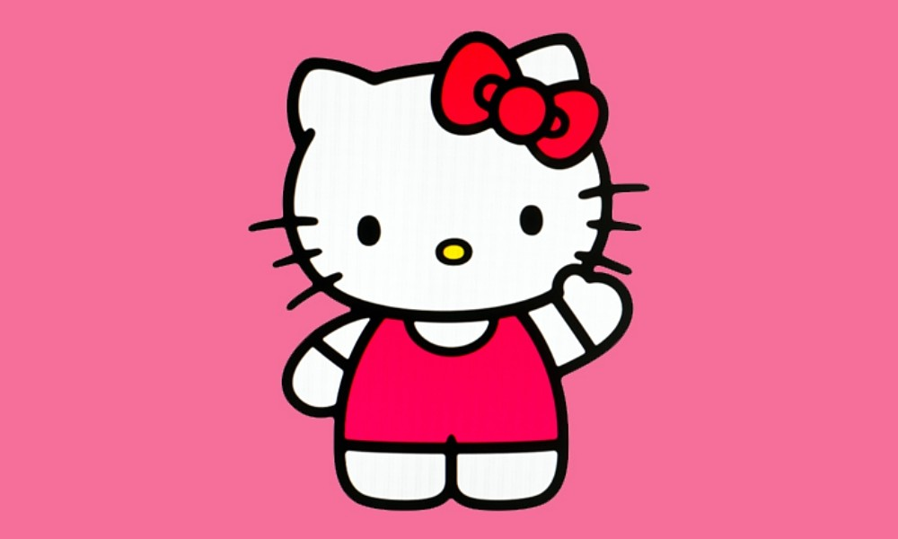

En esta pagina se mostraran algunas de mis cosas favoritas, puedes navegar los diferentes apartados que hay en la barra superior
Empezamos por mi color favorito, como se pueden dar cuenta, es el color rosado, por eso esta pagina tiene color rosado en ella.
Y como podemos ver Hello Kitty es mi personaje favorito, tengo mucha merch de ella♥
